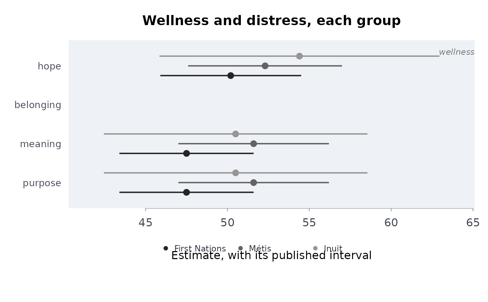

The four directions of the First Nations Mental Wellness Continuum, from published indicators
Source:R/indigenous_frameworks.R
mhcont.RdLays out a group's published indicators under the four outcomes of the First Nations Mental Wellness Continuum Framework (hope, belonging, meaning, purpose), each with its interval, and says which directions the tables have no measure of.
Usage
mhcont(
data,
grp,
ind,
est,
lower,
upper,
hope = NULL,
belong = NULL,
meaning = NULL,
purp = NULL,
qual = NULL,
conflvl = 0.95
)Arguments
- data
A data frame, one row per group and indicator.
- grp, ind, est, lower, upper
Column names: the group, the indicator, the estimate (percent) and its published limits.
- hope, belong, meaning, purp
The indicators taken as proxies for each direction, or
NULLwhere the tables have none.- qual
Optional column of quality flags:
"E"rows are marked use with caution, and suppressed ones ("F","x","..") get no estimate.- conflvl
Confidence level of the published intervals (default 0.95).
Value
A data frame with the classes rmbl_wellness_continuum and
rmbl_wellness_profile. Its columns are group,
indicator (the direction), side ("wellness"),
domain (the proxies), estimate, lower, upper,
usewithcau, shared, proxy (always TRUE).
Details
The Framework (Health Canada and Assembly of First Nations 2015)
describes mental wellness as hope for the future, a sense of belonging and
connectedness to family, community and culture, a sense of meaning and of how
one's life fits into creation, and purpose in daily life. It has no numeric
scoring, and no survey table measures the four directions as the Framework
defines them. This function takes the indicators a user names as proxies for
each (hope = "Always or often has a hopeful outlook", ...), reports
each direction's level (the mean of its proxies, their standard errors
combined as independent; the proxies share respondents, so if they are
positively correlated that standard error is too small), marks every row as a
proxy, and reports a direction given no proxy as missing rather than filling
it from another. One indicator named for two directions (Statistics Canada
asks about “meaning and purpose” together) is used for both and marked
shared.
The result plots as a welprof. For the balance across the
directions, call holbal on the rows with a proxy
(x[x$domain != "no published proxy", ], with "domain" as its
domain column): a missing direction otherwise leaves the balance NA,
and a shared proxy counts once per direction it serves, so give such
directions half weight. Other frameworks of wellness (Te Whare Tapa Wha, the
Social and Emotional Wellbeing domains, a Nation's own) take the same route
through welprof and holbal, which accept any set
of domains.
References
Health Canada, Assembly of First Nations (2015). First Nations
Mental Wellness Continuum Framework. Ottawa: Health Canada. Summary
report:
sac-isc.gc.ca/eng/1576093687903/1576093725971
Examples
# well-being, 2024 (table 41-10-0082-01): hope, and meaning and purpose
# (asked together); this table has no measure of belonging, so that direction
# is reported as missing
wb <- indiex("wellbeing")
mw <- mhcont(
wb,
"group",
"indicator",
"estimate",
"lower",
"upper",
hope = "Always or often has a hopeful outlook",
meaning = "Sense of meaning and purpose rating of 8, 9 or 10",
purp = "Sense of meaning and purpose rating of 8, 9 or 10",
qual = "quality"
)
mw
#> ╭── First Nations Mental Wellness Continuum: the four directions ────────╮
#> │ Groups First Nations; Métis; Inuit │
#> │ Directions hope, belonging, meaning, purpose │
#> │ Estimates percent, from the published tables │
#> │ │
#> │ First Nations │
#> │ direction estimate 95% CI proxy │
#> │ --------- -------- -------------- -------------- │
#> │ hope 50.20 [45.90, 54.50] yes │
#> │ belonging none published │
#> │ meaning 47.50 [43.40, 51.60] yes (shared) │
#> │ purpose 47.50 [43.40, 51.60] yes (shared) │
#> │ │
#> │ Métis │
#> │ direction estimate 95% CI proxy │
#> │ --------- -------- -------------- -------------- │
#> │ hope 52.30 [47.60, 57.00] yes │
#> │ belonging none published │
#> │ meaning 51.60 [47.00, 56.20] yes (shared) │
#> │ purpose 51.60 [47.00, 56.20] yes (shared) │
#> │ │
#> │ Inuit │
#> │ direction estimate 95% CI proxy │
#> │ --------- -------- -------------- -------------- │
#> │ hope 54.40 [45.85, 62.95] yes │
#> │ belonging none published │
#> │ meaning 50.50 [42.45, 58.55] yes (shared) │
#> │ purpose 50.50 [42.45, 58.55] yes (shared) │
#> │ │
#> │ No published proxy: belonging │
#> │ -- reported as missing, never filled from another direction. │
#> │ First Nations: highest hope (50.2), lowest meaning (47.5). │
#> │ Métis: highest hope (52.3), lowest meaning (51.6). │
#> │ Inuit: highest hope (54.4), lowest meaning (50.5). │
#> │ │
#> │ Proxy for hope: Always or often has a hopeful outlook │
#> │ Proxy for meaning: Sense of meaning and purpose rating of 8, 9 or 10 │
#> │ Proxy for purpose: Sense of meaning and purpose rating of 8, 9 or 10 │
#> │ Every level is a proxy: no survey table measures the directions as │
#> │ the Framework defines them (Health Canada and AFN 2015). │
#> │ yes (shared): one indicator serves two directions, counted for each. │
#> ╰────────────────────────────────────────────────────────────────────────╯
plot(mw)

# your own table: made-up percentages for two communities, with limits;
# one item stands for both meaning and purpose, and none for belonging
own <- data.frame(
community = rep(c("Lakeside", "Riverbend"), each = 2),
item = rep(c("Hopeful", "Life has meaning"), 2),
pct = c(64, 70, 58, 75),
lo = c(59, 65, 52, 70),
hi = c(69, 75, 64, 80)
)
mhcont(own, "community", "item", "pct", "lo", "hi", hope = "Hopeful",
meaning = "Life has meaning", purp = "Life has meaning")
#> ╭── First Nations Mental Wellness Continuum: the four directions ────────╮
#> │ Groups Lakeside; Riverbend │
#> │ Directions hope, belonging, meaning, purpose │
#> │ Estimates percent, from the published tables │
#> │ │
#> │ Lakeside │
#> │ direction estimate 95% CI proxy │
#> │ --------- -------- -------- -------------- │
#> │ hope 64 [59, 69] yes │
#> │ belonging none published │
#> │ meaning 70 [65, 75] yes (shared) │
#> │ purpose 70 [65, 75] yes (shared) │
#> │ │
#> │ Riverbend │
#> │ direction estimate 95% CI proxy │
#> │ --------- -------- -------- -------------- │
#> │ hope 58 [52, 64] yes │
#> │ belonging none published │
#> │ meaning 75 [70, 80] yes (shared) │
#> │ purpose 75 [70, 80] yes (shared) │
#> │ │
#> │ No published proxy: belonging │
#> │ -- reported as missing, never filled from another direction. │
#> │ Lakeside: highest meaning (70), lowest hope (64). │
#> │ Riverbend: highest meaning (75), lowest hope (58). │
#> │ │
#> │ Proxy for hope: Hopeful │
#> │ Proxy for meaning: Life has meaning │
#> │ Proxy for purpose: Life has meaning │
#> │ Every level is a proxy: no survey table measures the directions as │
#> │ the Framework defines them (Health Canada and AFN 2015). │
#> │ yes (shared): one indicator serves two directions, counted for each. │
#> ╰────────────────────────────────────────────────────────────────────────╯